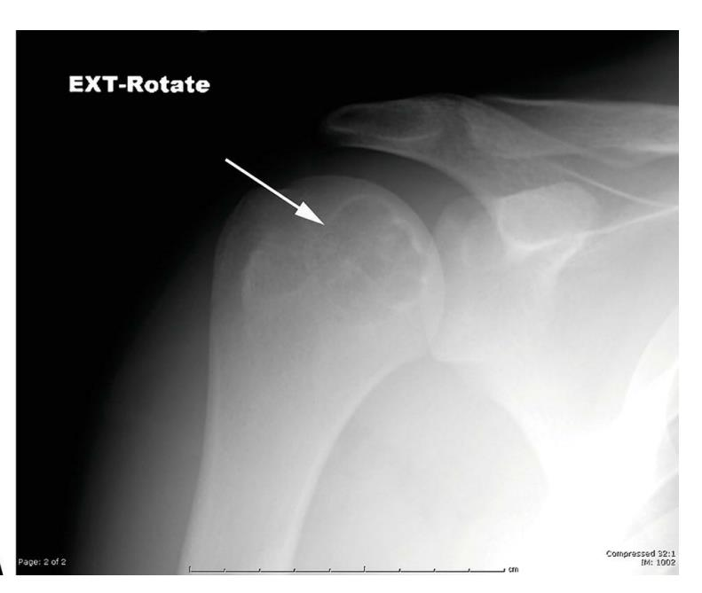

Adolescente de 15 anos com dor no ombro. Olhe o endereço da lesão.

Radiografia da provaA principal hipótese diagnóstica é
Três candidatos não batem com o endereço ou com a idade.
Teria destruição cortical, reação periosteal e matriz osteoide. Não é o caso.
Nicho pequeno com esclerose densa, na diáfise ou na metáfise. Endereço errado.
Mora na epífise, mas do adulto jovem, depois que a fise fecha. Idade errada.
Endereço e idade batem. A resposta sai no próximo story.
Endereço: epífise (aqui, a cabeça do úmero).
Idade: adolescente, com a fise aberta.
Aspecto: lítica, bem delimitada, com fino halo esclerótico.
A seta da prova aponta a lesão na epífise da cabeça do úmero, num ombro de 15 anos.
Para a provaLesão lítica epifisária em adolescente com fise aberta = condroblastoma.
Questões do TARO e do TEOT, comentadas assim.ortoquestoes.com.bro caminho está no nosso perfil